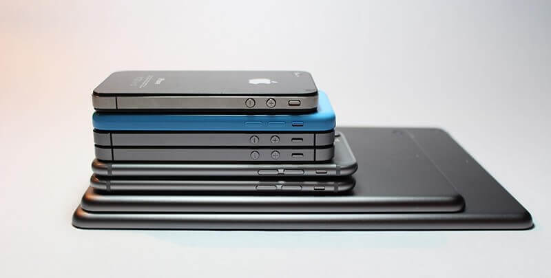

Tout comme Black Panther, nous utilisons un métal magique dans nos appareille électronique qui est le Lithium. Ce Lithium est extrait sous terre comme le Vibranium, et fais de nombreux dégâts en France comme en Bolivie. Mais suite aux utilisations de produits chimiques et d’appareilles à CO2, la pollution des eaux et le réchauffement climatique ne cesse de s’accroître . Cela s’est fait ressentir en 2018 qui fut l’année extrême des températures.
Les problèmes de l'extraction
du Lithium pour
la Planète
Le lithium est l’une des matière les plus
compliqué à extraire dans le Monde. En effet,
les gisements de ce métal sont situés dans
des endroits spécifiques, très profond,
comme le désert de sel en Bolivie. Soit,
les méthodes d’extraction nécessite d’utiliser
énormément d’eau en utilisant des produits
toxiques, afin de récupérer les minéraux de
Lithium.
Extrait de Lithium, en Bolivie
La demande de Lithium ne cesse d’augmenter,
soit les méthodes polluantes ne cesse d’être
utilisées. En effet, lors de l’extractions du Lithium
d’énorme quantité d’eau sont prélevés, ce qui
provoque un assèchement des terres. Comme l’explique
la citation ci-dessous, l’hommes dégrade son propre
écosystème.
Assèchement de la Terre
« Les piliers de l’environnement, soit notre terre
nourricière, l’eau que nous buvons et l’air que nous respirons,
les forêt régulatrices et la diversité biologique, sont
aujourd’hui malades des hommes. »
Jacques-Pascal Cusin, To Bio or Not To Bio ?, MARABOUT p.37
Par ailleurs, pour pouvoir extraire correctement
le Lithium, comme expliqué précédemment de nombreuses Machines
d’extractions sont utilisés, et dont ces dernières libèrent
d’énormes quantité de CO2. Cette extraction participe donc au
réchauffement climatique, ( c’est à dire à la Fonte des glacier,
à la disparition de certaines espèces d’animaux, à une augmentation
des températures). Autrement dis, à de nombreux dégâts et problèmes
pour la générations future. Mais l’extraction du Lithium n’est pas
le seul facteur de la dégradation des sols, d’autre extraction sont
réalisées dans le monde pour extraire d’autre métaux.
« Ce sont les activités humaines qui sont
à l’origine des troubles que connaissent les sols.
Elles ont pratiquement toutes, de façon directe ou
indirecte, un impact plus ou moins prononcé. La
dégradation des sols sous l’effet des activités
humaines ne cesse de s’accentuer. Les atteintes
aux sols peuvent être d’ordre chimique (pollutions),
biologique (OGM) ou physique (compaction, érosions).
[…] Les sols s’épuisent aussi lorsqu’ils n’ont plus
la possibilité de se régénérer, tant on les exploite
avec comme unique objectif la vénalité d’un profit
maximum. »
Jacques-Pascal Cusin, To Bio or Not To Bio ?, MARABOUT p.37
Pourquoi le Lithium est il
autant demander ?
Tout d’abord, le Lithium est un métal très léger
de couleur grise. Nous pouvons considérer le Lithium comme
une matière première, car ce dernier est utilisé pour la
construction de biens.
Production de batterie lithium-ion
En effet, ce métal est principalement utilisé
par des Industries de batteries, que ce soit dans les
batteries automobiles, ou d’ordinateurs et même encore
de smartphones. Ce métal est l’un des plus recherché sur
terre
Ses principales zones de gisement sont situées
sous des eaux ou des terres salée. Notamment en Amérique
du Sud, en Bolivie, et en Chine.

Produit Apple
Celui ou celle qui lis cet article possède
surement du lithium sur son appareil électrique.
En effet, le Lithium possède une énorme capacité de
stockage d’énergie Électrique, ainsi un atout principale
pour les constructeurs d’automobiles électriques ou
de smartphone…
C’est le cas d’Apple :
« Votre batterie au lithium-ion Apple
procède d’abord à une charge rapide pour
atteindre rapidement 80 % de sa capacité,
puis elle passe en charge de maintien,
plus lente. »
Produit Apple
Il faut donc résoudre et limiter ces
dégâts environnementaux qui peuvent engendrer
de nombreux problèmes à nos générations futures.
Des solutions sont possibles, mais il faut pouvoir
les mettre en pratique.